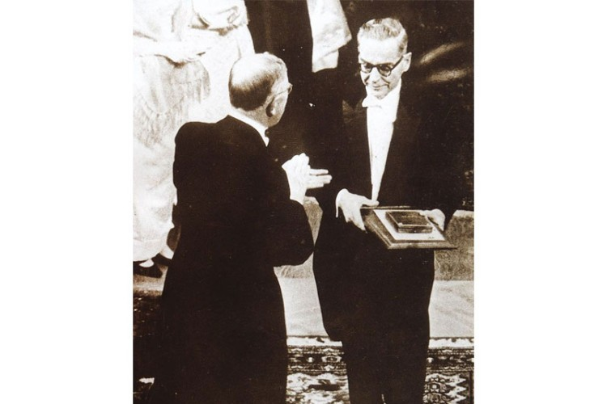

Nobelov komitet 1961. godine dodeljuje Andriću Nobelovu nagradu za književnost „za epsku snagu kojom je oblikovao teme i prikazao sudbine ljudi tokom istorije svoje zemlje”. Besedom „O priči i pričanju” se 10. decembra 1961. godine zahvalio na priznanju. Andrić je novčanu nagradu od milion dolara dobijenu osvajanjem Nobelove nagrade u potpunosti poklonio za razvoj bibliotekarstva u Bosni i Hercegovini.
Roman "Na drini ćuprija", za koji je dobio Nobelovu nagradu, pripoveda o građenju mosta preko reke Drine u bosanskom gradu Višegradu. Građenje mosta naručio je Mehmed paša Sokolović, čuveni zvaničnik osmanskog carstva koji je bio rođeni Srbin iz Rudog.
Radnja romana traje otprilike 4 veka i skup je raznih priča u vezi sa mostom na Drini, koji je tačka okosnica i glavni simbol naracije.
Sam most predstavlja na neki način suprotnost ljudskoj sudbini koja je prolazna, u odnosui na kamenu građevinu, koja je večna.
Ujednom delu romana ,Na Drini ćuprija" opisao je kako su se stanovnici Višegrada ponašali sredinom 19. veka kada je samo stotinak kilometara udaljeno Sarajevo za 25 godina dva puta zahvatila epidemija kuge i jednom kolere.
Cuvari reda su pili rakiju i jeli beli luk kao preventivu a, za vreme nametnutog karantina, imali pune ruke posla sa neodgovornim putnicima koji su ih uveravai da su baš oni ,zdravi kao dren i da nemaju veze sa kolerom koja je čak tamo negde, u Sarajevu"...
Mnogi govore kako je Andric opisao pandemiju koja se desava u savremenom dobu 2 veka kasnije. Njegovi opisi pandemije tada dokazuju kako smo kao drustvo ostali na istoj razini razmisljanja kao i pre dva veka.